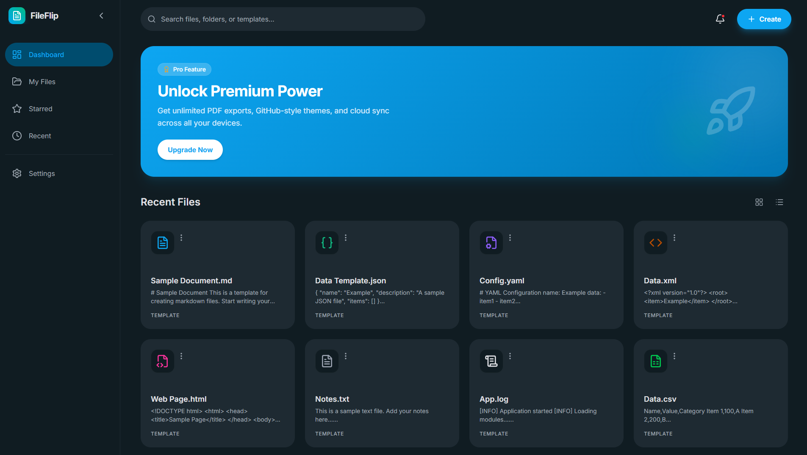
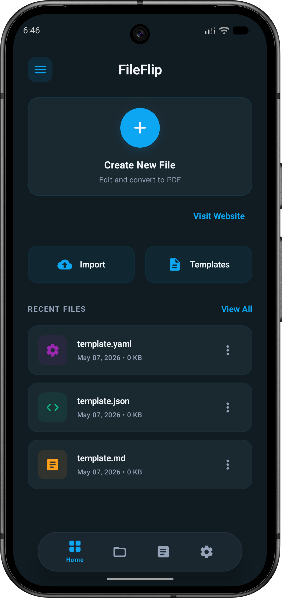
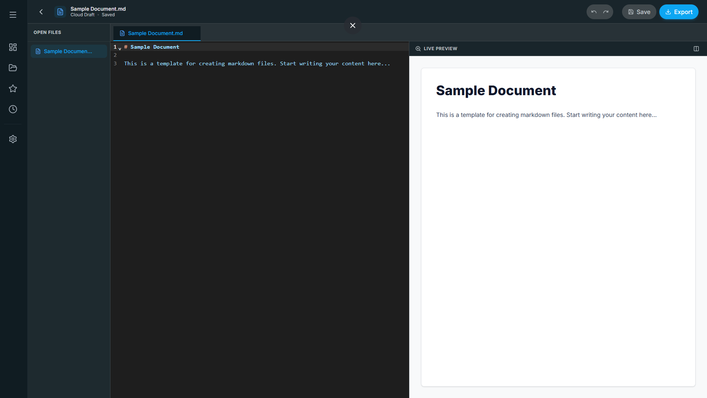
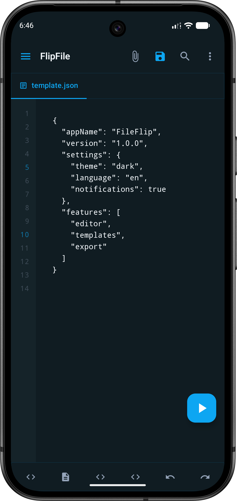
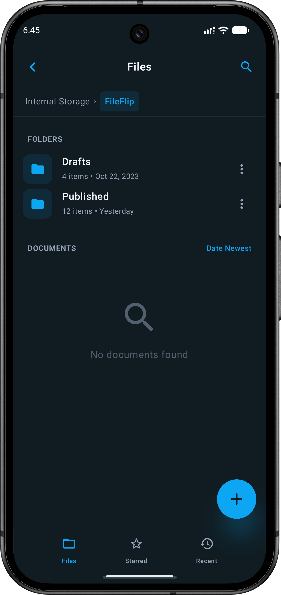
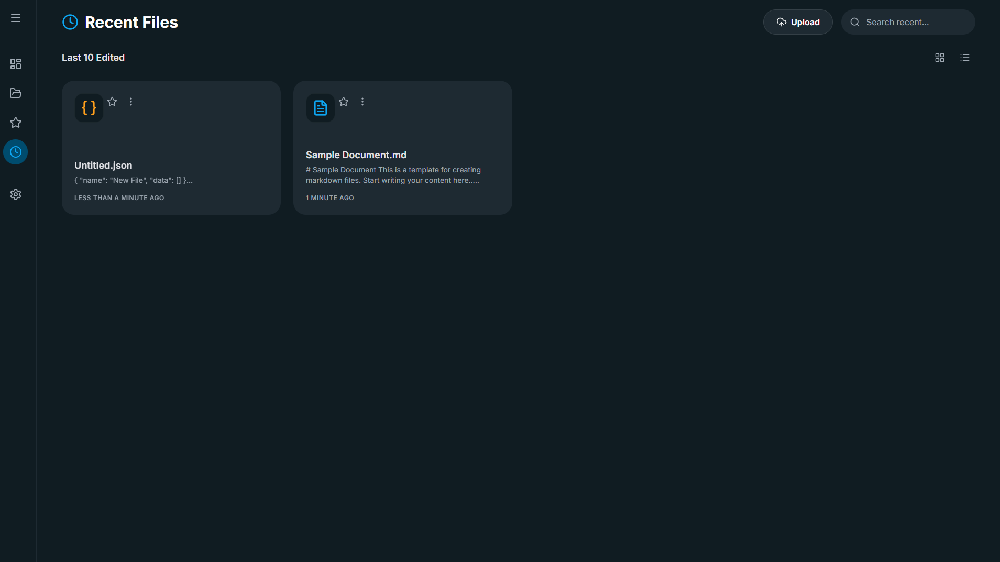
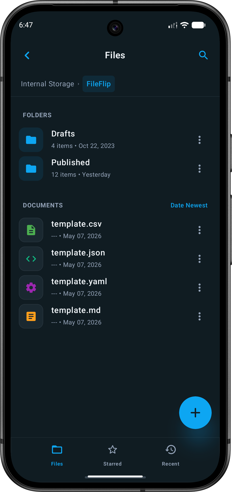
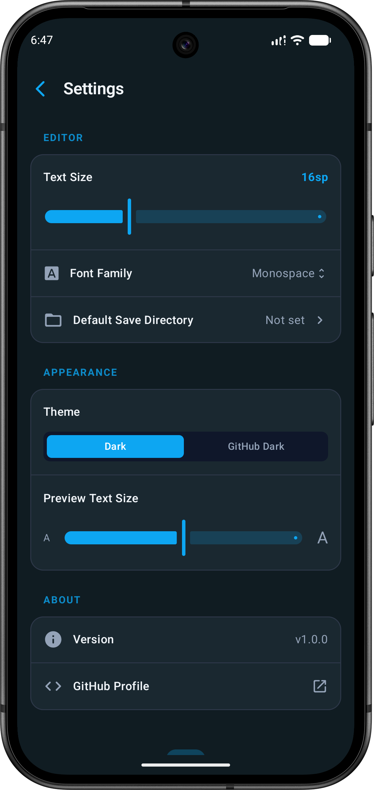
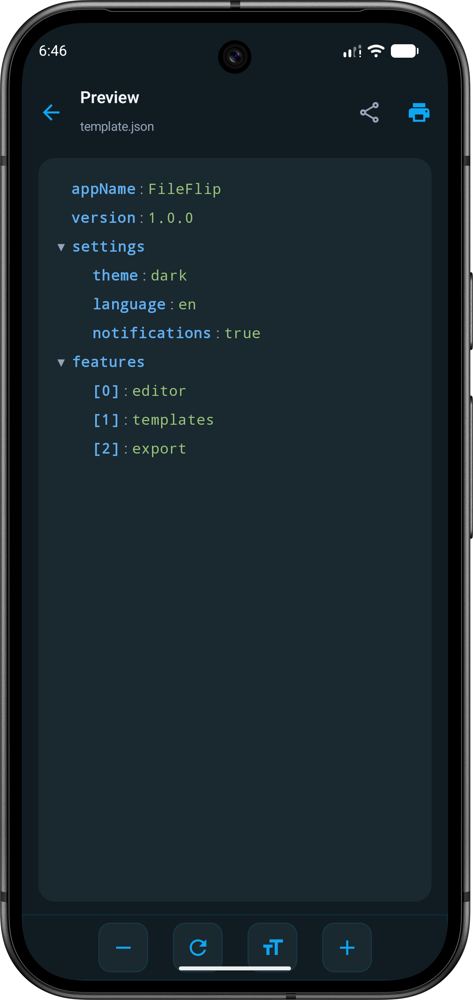

The beautifully polished text and markdown editor. Your sensitive data never leaves your device.


Syntax highlighting, live Markdown previews, and a clean M3 interface that feels exactly like a desktop IDE.
Reduces eye strain with high contrast
Markdown, JSON, YAML, and more


Clean surface-variant cards, precise iconography, and folder management that keeps your workspace completely clutter-free.



Transform raw markdown into clean, GitHub-styled PDFs. Share beautifully formatted documentation with zero headaches.

